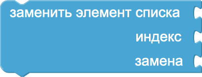
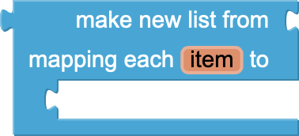
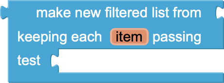
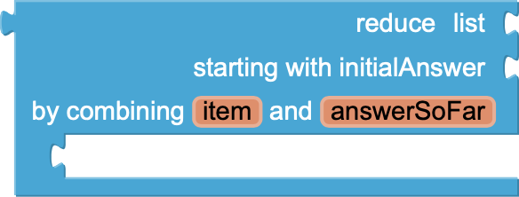
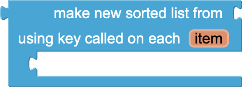
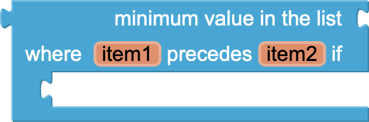
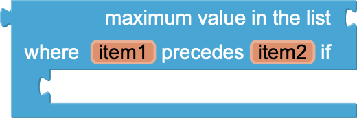
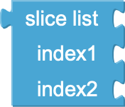

Блоки массивов в MIT App Inventor
Блоки массивов в MIT App Inventor предназначены для работы со списками данных. С их помощью можно создавать, изменять и анализировать списки элементов. Они позволяют добавлять новые элементы, удалять существующие, сортировать данные и выполнять поиск внутри списка. Эти блоки особенно полезны при работе с большими объемами данных, где требуется удобное хранение и обработка информации, например, списков покупок, задач или контактов.
- add items to list (добавить элементы в список): Этот блок добавляет один или несколько элементов в существующий список.
- insert list item (вставить элемент в список): Этот блок вставляет элемент в список на указанную позицию.
- replace list item (заменить элемент в списке): Этот блок заменяет элемент в списке на указанной позиции.
- remove list item (удалить элемент из списка): Этот блок удаляет элемент из списка по указанному индексу.
- append to list (добавить в конец списка): Этот блок добавляет элементы второго списка в конец первого списка.
- make a list (создать список): Этот блок создаёт новый список с указанными элементами.
- is in list (находится в списке): Этот блок проверяет, содержится ли указанный элемент в списке. Возвращает true, если элемент найден.
- length of list (длина списка): Этот блок возвращает количество элементов в списке.
- is list empty (является ли список пустым): Этот блок проверяет, пуст ли список. Возвращает true, если список не содержит элементов.
- pick a random item (выбрать случайный элемент): Этот блок выбирает случайный элемент из списка.
- index in list (индекс в списке): Этот блок возвращает позицию элемента в списке. Если элемент не найден, возвращает 0.
- select list item (выбрать элемент списка): Этот блок возвращает элемент из списка по указанному индексу.
- copy list (копировать список): Этот блок создаёт копию списка.
- is a list? (является ли список?): Этот блок проверяет, является ли указанное значение списком. Возвращает true, если это список.
- reverse list (обратить список): Этот блок меняет порядок элементов списка на противоположный.
- list to csv row (список в строку CSV): Этот блок преобразует список в строку формата CSV (через запятую).
- list to csv table (список в таблицу CSV): Этот блок преобразует список списков в таблицу формата CSV.
- list from csv row (список из строки CSV): Этот блок преобразует строку формата CSV в список.
- list from csv table (список из таблицы CSV): Этот блок преобразует текст формата CSV в список списков.
- lookup in pairs (поиск в парах): Этот блок ищет значение по ключу в списке пар ключ-значение.
- join with separator (соединить с разделителем): Этот блок объединяет элементы списка в строку, разделяя их указанным символом.
- make new mapped list (создать новый отображённый список): Этот блок создаёт новый список, применяя функцию к каждому элементу исходного списка.
- make new filtered list (создать новый отфильтрованный список): Этот блок создаёт новый список, содержащий только те элементы, которые удовлетворяют указанному условию.
- reduce list to a single value (сократить список до одного значения):Этот блок применяет функцию для последовательного объединения элементов списка в одно значение.
- sort list in ascending order (отсортировать список по возрастанию): Этот блок сортирует элементы списка по возрастанию.
- sort list with a specified comparator (отсортировать список с компаратором): Этот блок сортирует список, используя указанное правило сравнения.
- sort list with key (отсортировать список по ключу): Этот блок сортирует список, используя указанную функцию для получения ключа сравнения.
- minimum value in list (минимальное значение в списке): Этот блок возвращает минимальное значение из списка.
- maximum value in list (максимальное значение в списке): Этот блок возвращает максимальное значение из списка.
- all but first (все, кроме первого): Этот блок возвращает список без первого элемента.
- all but last (все, кроме последнего): Этот блок возвращает список без последнего элемента.
- list slices (срезы списка): Этот блок возвращает подсписок из указанного списка, задаваемый началом и концом.
- create empty list (создать пустой список): Этот блок создаёт новый пустой список, в который позже можно добавлять элементы.
Блоки 2-го уровня первого типа
Добавить в список (список) элементы (элемент)
-– обновить список
-– обновить список
Вставить в список (список) на позицию (индекс) элемент
(элемент)
-– обновить список
-– обновить список

Заменить элемент в списке (список) на позиции (индекс) на (новый
элемент)
-– обновить список
-– обновить список
Удалить элемент из списка (список) на позиции (индекс)
-– обновить список
-– обновить список
Добавить (элементы) в конец списка (список)
-– обновить список
-– обновить список
Блоки 2-го уровня второго типа
Создать список (элемент1, элемент2)
-– использовать для хранения данных
-– использовать для хранения данных
Если (элемент находится в списке)
-– выполнять действие
-– выполнять действие
Длина списка (список)
-– использовать результат для вычислений
-– использовать результат для вычислений
Если (список пустой)
-– выполнять действие
-– выполнять действие
Случайный элемент (список)
-– использовать результат
-– использовать результат
Индекс элемента (элемент, список)
-– использовать результат для выполнения действия
-– использовать результат для выполнения действия
Элемент списка (список, индекс)
-– использовать результат
-– использовать результат
Копировать список (список)
-– использовать копию для дальнейших операций
-– использовать копию для дальнейших операций
Если (значение является списком)
-– выполнять действие
-– выполнять действие
 Обратить порядок элементов в списке (список)
Обратить порядок элементов в списке (список)-– использовать результат
Преобразовать список в строку CSV (список)
-– использовать для экспорта данных
-– использовать для экспорта данных
Преобразовать список в таблицу CSV (список списков)
-– использовать для экспорта данных
-– использовать для экспорта данных
Преобразовать строку CSV (текст) в список
-– использовать результат для выполнения действия
-– использовать результат для выполнения действия
Преобразовать таблицу CSV (текст) в список списков
-– использовать результат
-– использовать результат
Поиск по ключу (ключ, список пар)
-– использовать результат
-– использовать результат
Соединить элементы с разделителем (разделитель) список (список)
-– использовать результат
-– использовать результат

Создать новый список из (список), преобразовав элементы
(функция)
-– использовать результат
-– использовать результат

Создать новый список из (список), фильтруя элементы (условие)
-– использовать результат
-– использовать результат

Сократить список (список) с помощью функции (функция)
-– использовать результат
-– использовать результат
Отсортировать список по возрастанию (список)
-– использовать результат
-– использовать результат
Отсортировать список (список) с компаратором (функция)
-– использовать результат
-– использовать результат

Отсортировать список (список) по ключу (функция)
-– использовать результат
-– использовать результат

Минимальное значение в списке (список)
-– использовать результат
-– использовать результат

Максимальное значение в списке (список)
-– использовать результат
-– использовать результат
Все, кроме первого (список)
-– использовать результат
-– использовать результат
Все, кроме последнего (список)
-– использовать результат
-– использовать результат

Срез списка (список, начало, конец)
-– использовать результат
-– использовать результат
Блоки 3-го уровня
Создать пустой список
-– использовать для хранения данных
-– использовать для хранения данных